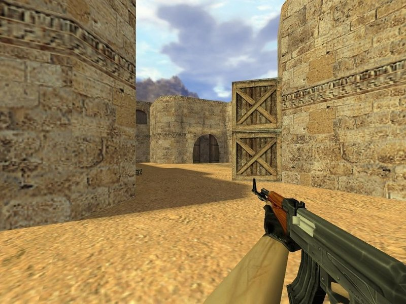
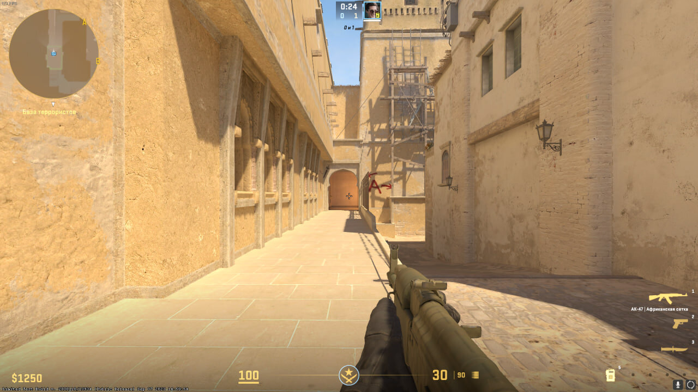
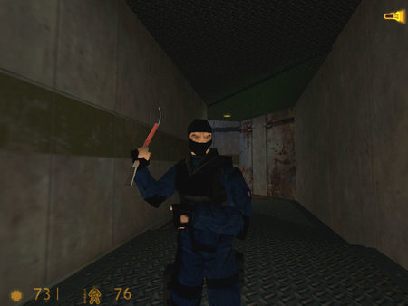
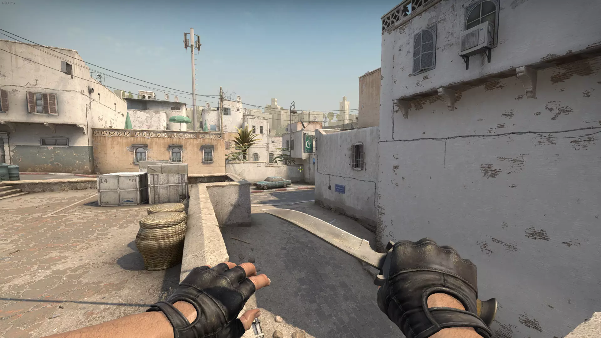

История Counter-Strike
 Гусман работал над своим модом по 30-40 часов в неделю, постоянно обновляя его, добавляя новые функции и исправляя баги.
Продвижением и распространением мода занимался Джес Клиф, второй разработчик CS.
В 2000 году Valve заинтересовались модом. Они связались с Ли и взяли его на работу. Как оказалось, это было одно из лучших решений за время существования компании.
И уже под началом Valve 8 ноября 2000 года вышла первая standalone-версия КС (в отдельном клиенте с собственным запуском) под номером 1.0 – версии до нее запускались через клиент Half-Life.
11 октября 2003 года выходит CS 1.6, самая популярная и «долгоиграющая» версия игры. Именно в 1.6 рубились школьники, убегавшие с уроков в середине двухтысячных,
После 1.6 выходят новые версии: 23 марта 2004 года – Counter-Strike Condition Zero, который является практически тем же 1.6, но на другом движке; 7 октября 2004-го – Counter-Strike Source, понравившийся не всем – многие продолжали играть в 1.6.
Наконец, 12 августа 2011 года Valve анонсируют Counter-Strike: Global Offensive. Абсолютно тот же привычный геймплей, но с самой современной графикой, обновленным движком, торговой площадкой и мастерской Steam. Спустя год, 21 августа 2012-го, игра выходит в свет.
В этой версии контра становится самым популярным видом киберспорта на планете. Призовые доходящие до миллиона долларов, огромное количество премьер, мажор- и минор-турниров, спонсорские контракты и многое другое. Быть профессиональным CS-ером становится престижно, модно и круто, а самое главное – выгодно.
Но не так давно, а именно 27 сентября 2023г. вышла CS2 с новой современной графикой.